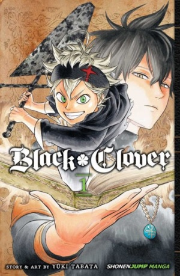
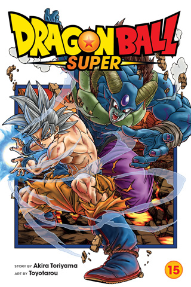

Favorite Manga
One of the things I do on my downtime is read manga. I've seen quite a handful of different genres of anime,so it will be hard to make a list of my top three favorites.
Alright starting from number one is Black Clover. Second is Chainsaw Man and in third is Dragonball Z/Super.
Black Clover
By Yuki Tabata
Black clover is about a world were magic is everything and society is divided with royals and peasants. One day two young boys named Asta and Yuno are dropped off at a church/orphange.
As time passes both boys grow up, Yuno gains strong wind magic and Asta has no magic. They both have the same dream of becoming the "wizard king", the highest military position that is looked up by the people in the kingdom.
Now Asta knowing he has no magic still pushes to becoming stronger and says his magic is never giving up. Eventually the two head out to get their grimoires(book of spells) and Asta doesn't get his.
As more of the plot goes on, Asta does get his grimoire of ant-magic, magic that can cancel out other magic. Sooner or later he joins the magic knights known as the Black Bulls. From there he is faced with many challenges.
No matter what he faces his magic is never giving up.
Chainsaw Man
By Tatsuki Fujimoto

Chainsaw man is about a young man named Denji that works for the Yakuza to pay off his father's debt that he left him to deal with. He becomes a devil hunter with his devil chainsaw dog. In this world devils are made by people's fears, so if enough people feared something there would be a devil for it.
Denji's life is very sad he lives in a shed and has to sell some of his organs to help pay off the debt. The only dream he wants in his life is to have a girlfriend, bread with jelly, and having a normal life.
Later on the Yukuza betrays on Denji and makes a contract with a zombie devil to make there clan stronger by turning themselves into zombies and killing Denji was part of the contract. He gets brutally killed with his chainsaw devil dog and thrown in the dumpster, but Denji's blood falls onto the dogs mouth which makes the devil regenerate and becomes Denji's heart.
In purgatory both Denji and his chainsaw dog meet and the dog tells Denji this is our contract, I want to see your dreams come true. Then Denji is brought back to life, but is suited up with chainsaw arms and has a chainsaw for a head. In short he comes a hybrid of human and devil.
Denji then kills the zombie devil and the whole Yukuza clan. The next morning other devil hunters come to kill the zombie devil, but is met with Denji. Denji then collapse and is caught by one of the hunters named Makima and is turned back to normal.
Dragonball Z/Super
By Akira Toriyama
Dragonball is one of the longest series I have read because it has about three expansions to it's story. The first being Dragonball then Dragonball Z and now in the recent story being Dragonball Super.
Dragonball Z and Super kind of have the same story built plot. Like there is a new arc with a new villian and the fighters have to defeat them. Its the fights that make the story really good.
The main character is Goku he is from an alien race called the sayians and was to be the very few to survive the sayian's extinction. He was sent off the planet when he was a baby and was taken in by an old man named Gohan.
He was belived to be born human for a long time, but once his brother found him and kidnapped his son. He was told that he wasn't human, but a race of brutal warriors that take and enslave other planets.
Goku is a well trained fighter and would do anything to protect his home planet Earth. Later on in Dragonball Z he gained a form called Super Sayian that was to be belived to be a myth in his race's history.
There are many more arcs that the story of Goku goes through and this leads into Dragonball Super. Where Goku is facing more stronger foes then the last and he is doing all this to protect his home and friends.